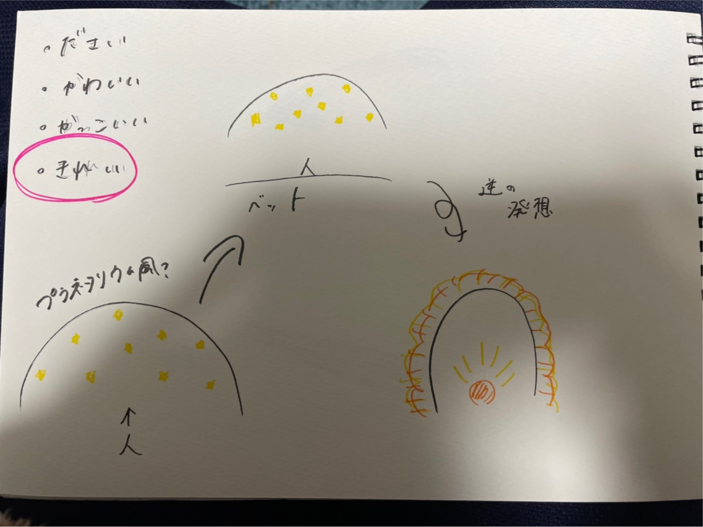
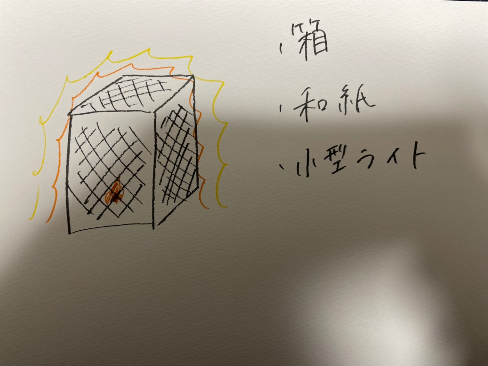
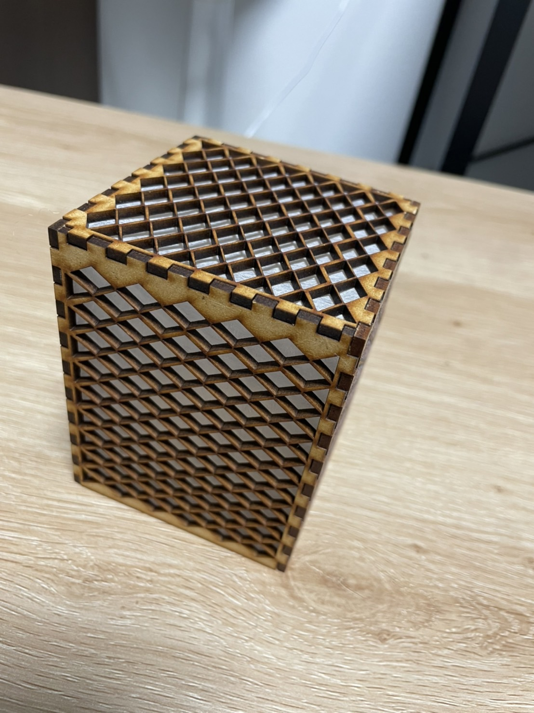
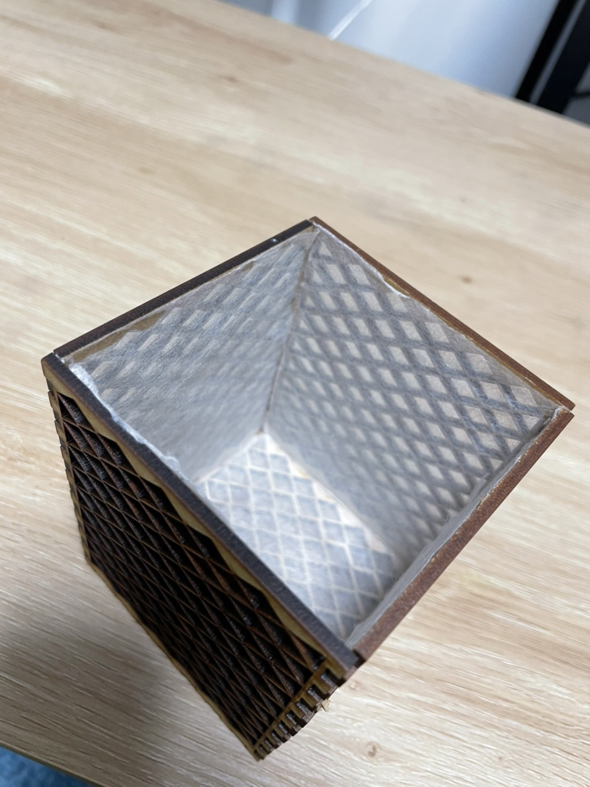
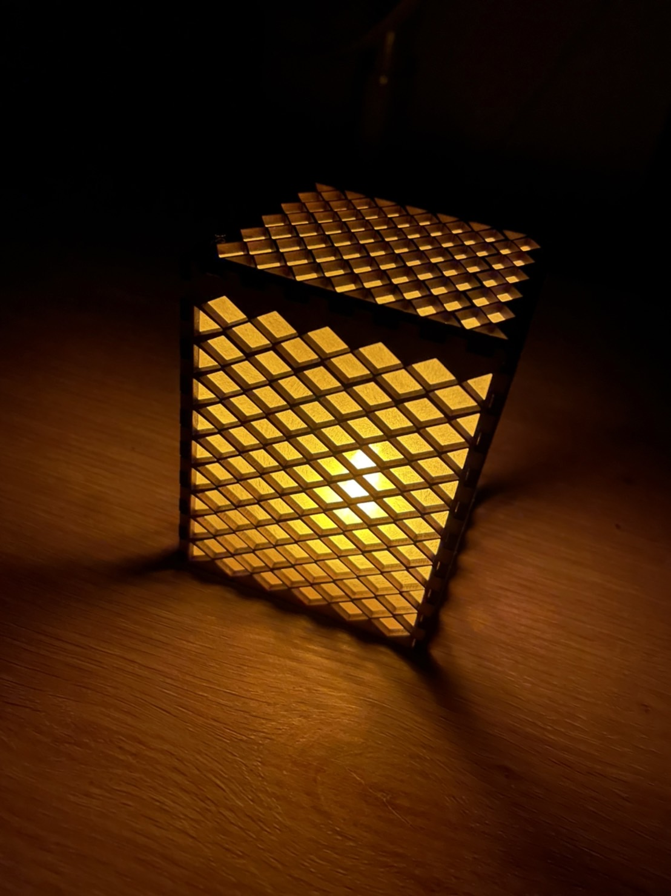

レーザーカッターを使って、プラネタリウムから連想したキレイと思えるおしゃれなライトを作ってみた！
これを作るに至ったスケッチがこちらです。


私は、“一目見て、キレイと思うもの”を作りたいと思いました。
そこで頭に浮かんだのがプラネタリウムでした。
家でもきれいなプラネタリウムが見れたらなぁと思って考えを広げているときに、和室にありそうな、ぼんやりと灯る明かりを思いつきました。
レーザーカッターでの制作過程
まず外枠をレーザーカッターで作っていきます。


これがレーザーカッターで作った外枠に和紙を貼り付けたものです。
和紙を張ることによって、光の柔らかさを出そうと思いました。
完成品がこちら

明るいままだとこんな感じになります。
これを暗くすると...

これで完成です。